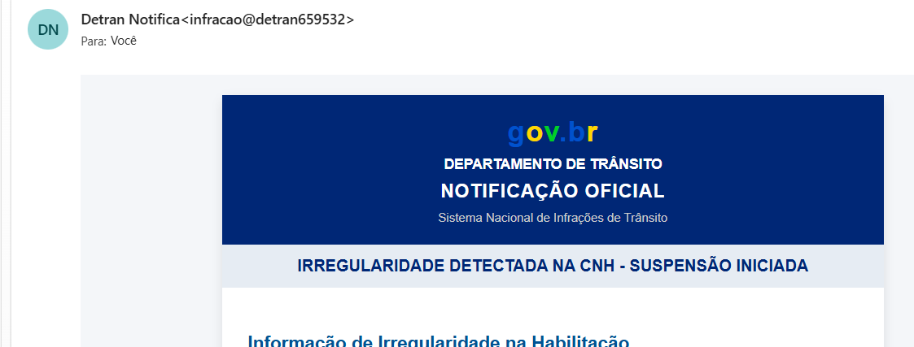
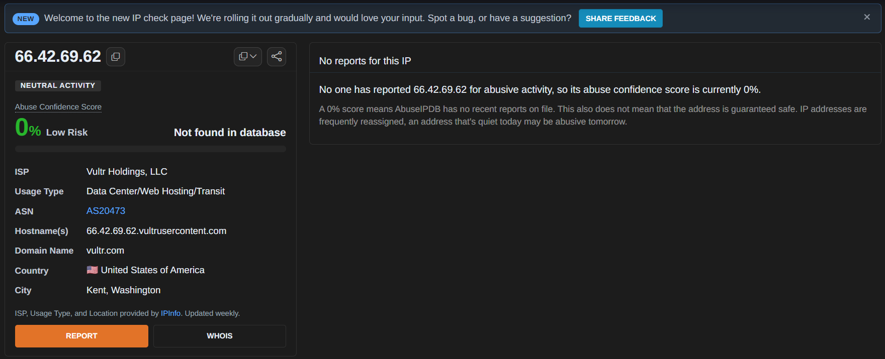

SOC N1 · Blue Team · em formaçãoSOC Tier 1 · Blue Team · in training
Eu ataco meu próprio laboratório
para aprender a defender.I attack my own lab
to learn how to defend.
Portfólio prático de Segurança da Informação. Cada projeto usa dados reais: logs do SIEM, cabeçalhos de e-mail, alertas. Tudo explicado passo a passo, do jeito que um analista de SOC investiga.A hands-on information security portfolio. Every project uses real data: SIEM logs, email headers, alerts. Everything is explained step by step, the way a SOC analyst investigates.
- 2projetos concluídos/em andamentoprojects done / in progress
- 19alertas reais analisadosreal alerts analyzed
- 3VMs no laboratóriolab VMs
ProjetosProjects
02 · Home Lab de SOCSOC Home Lab
Wazuh + Windows 11 com Sysmon + Kali. Ataques simulados, detectados e investigados.Wazuh + Windows 11 with Sysmon + Kali. Simulated attacks, detected and investigated.
ConcluídoDone01 · Phishing "Falso DETRAN""Fake DETRAN" phishing
E-mail de golpe real analisado sem clicar em nada: cabeçalhos, SPF/DKIM/DMARC, truque do "@" na URL, IOCs e denúncias.A real scam email analyzed without clicking anything: headers, SPF/DKIM/DMARC, the "@" URL trick, IOCs and abuse reports.
03 · TryHackMe
Trilha SOC Level 1 com write-ups.SOC Level 1 path with write-ups.
02 · Home Lab
O laboratórioThe lab
Três máquinas virtuais numa rede isolada. O Kali ataca, o Windows 11 é a vítima e registra tudo com o Sysmon, e o Wazuh (SIEM) recebe os logs, correlaciona e gera alertas. Gire o modelo com o mouse e clique em cada máquina.Three virtual machines on an isolated network. Kali attacks, Windows 11 is the victim and records everything with Sysmon, and Wazuh (SIEM) receives the logs, correlates them and raises alerts. Drag to rotate and click each machine.
02 · Cenário 102 · Scenario 1
Brute force de senha via SMB: replay 3DSMB password brute force: 3D replay
Os 19 alertas reais gerados pelo Wazuh em 14/11/2026, entre 05:55 e 05:59 UTC, reproduzidos na ordem em que aconteceram. Aperte ▶ ou clique em qualquer evento da lista para ver o que ele significa e o log original.The 19 real alerts Wazuh raised on 2026-11-14 between 05:55 and 05:59 UTC, replayed in the order they happened. Press ▶ or click any event in the list to see what it means and the original log.
02 · Cenário 102 · Scenario 1
A investigaçãoThe investigation
As perguntas que um analista N1 respondeThe questions a Tier 1 analyst answers
1. Foi mesmo um brute force?1. Was it really a brute force?
Sim. Foram 9 falhas de login (evento 4625) em ~16 segundos, todas do mesmo IP e contra a mesma conta, uma a cada ~2 s. Nenhum humano digitando produz esse ritmo: é automação.Yes. 9 failed logons (event 4625) in ~16 seconds, all from the same IP against the same account, one every ~2 s. No human typing produces that rhythm: it is automated.
2. O ataque teve sucesso?2. Did the attack succeed?
Sim, e esse é o ponto mais importante. 2 segundos depois da última falha, o mesmo IP fez login com sucesso (evento 4624, logonType 3) na mesma conta. A sequência várias falhas → um sucesso é o indicador clássico de senha descoberta. Deixa de ser "tentativa" e vira incidente.Yes, and that is the key point. 2 seconds after the last failure, the same IP logged on successfully (event 4624, logonType 3) to the same account. The many failures → one success pattern is the classic sign of a guessed password. It stops being an "attempt" and becomes an incident.
3. Houve preparação antes do ataque?3. Was there preparation before the attack?
Sim. Às 05:56:39 aparece um login anônimo (null session, NTLM V1) vindo do atacante. É a ferramenta sondando o serviço SMB antes de testar senhas: a fase de reconhecimento.Yes. At 05:56:39 there is an anonymous logon (null session, NTLM V1) from the attacker. That is the tool probing the SMB service before trying passwords: the reconnaissance phase.
4. Os outros "Logon Success" são do atacante?4. Are the other "Logon Success" events from the attacker?
Não. Eles são da conta SISTEMA, com logonType 5 (serviço), iniciados pelo services.exe. É o Windows funcionando normalmente: falso positivo descartado. Separar ruído de ataque é metade do trabalho de um N1.No. They belong to the SYSTEM account with logonType 5 (service), started by services.exe. That is Windows working normally: false positive ruled out. Telling noise from attack is half of a Tier 1 analyst's job.
Os campos que contam a históriaThe fields that tell the story
| CampoField | ValorValue | O que significaWhat it means |
|---|---|---|
ipAddress | 10.0.10.30 | Mesma origem nas falhas e no sucesso: é o mesmo ator.Same source for the failures and the success: same actor. |
logonType | 3 | Login pela rede (SMB), não no teclado da máquina (que seria 2).A network logon (SMB), not at the keyboard (that would be 2). |
status / subStatus | 0xC000006D / 0xC000006A | Usuário existe, senha errada. O atacante já sabia um nome de conta válido.User exists, wrong password. The attacker already knew a valid account name. |
authenticationPackageName | NTLM | Autenticação NTLM, típica de ferramentas de ataque contra SMB.NTLM authentication, typical of attack tools against SMB. |
rule.frequency | 8 | Limite de correlação: o alerta 60204 dispara depois de 8 falhas na janela de tempo.Correlation threshold: alert 60204 fires after 8 failures within the time window. |
⚠️ O que aprendi além do óbvio⚠️ What I learned beyond the obvious
- A etiqueta da regra pode errar. O Wazuh chamou o login de "possible pass-the-hash" (T1550.002), mas o atacante usou a senha descoberta, não um hash. O analista valida o contexto em vez de copiar o rótulo.Rule labels can be wrong. Wazuh called the logon "possible pass-the-hash" (T1550.002), but the attacker used the guessed password, not a hash. The analyst validates context instead of copying the label.
- Detectar não é impedir. O alerta nível 10 disparou, e o atacante entrou 5 segundos depois. Sem resposta automática nem bloqueio de conta, o SIEM só documentou o ataque.Detecting is not preventing. The level-10 alert fired, and the attacker got in 5 seconds later. With no automated response and no account lockout, the SIEM only documented the attack.
- Fuso horário importa. O painel mostra o horário local e o índice guarda UTC. Todo relatório deve citar o fuso.Time zones matter. The dashboard shows local time while the index stores UTC. Every report should state the time zone.
🛡️ Resposta recomendada🛡️ Recommended response
- Conter: desabilitar/resetar
joao.testee encerrar sessões.Contain: disable/resetjoao.testeand kill sessions. - Bloquear 10.0.10.30 (manualmente ou via Active Response do Wazuh na regra 60204).Block 10.0.10.30 (manually or with Wazuh Active Response on rule 60204).
- Investigar o pós-login: o que a conta acessou depois das 05:57:09.Investigate post-logon: what the account accessed after 05:57:09.
- Prevenir: política de bloqueio de conta, senhas fortes, SMB restrito.Prevent: account lockout policy, strong passwords, restricted SMB.
Prints do Wazuh (clique para ampliar)Wazuh screenshots (click to enlarge)


Explorador de logs brutosRaw log explorer
Os documentos exatamente como estão no indexador do Wazuh. Clique numa linha para abrir o JSON completo.The documents exactly as stored in the Wazuh indexer. Click a row to open the full JSON.
| timestamp (UTC) | rule.id | lvl | event | user | src IP | rule.description |
|---|
01 · Phishing
O caminho de um e-mail falso do DETRANThe path of a fake DETRAN email
Um phishing real recebido numa caixa pessoal. Nenhum link foi clicado: a análise toda foi feita no arquivo .eml. Abaixo, o percurso do e-mail em 3D, lido a partir dos cabeçalhos Received. Clique em cada salto.A real phishing email received in a personal inbox. No link was clicked: the whole analysis was done on the .eml file. Below is the email's route in 3D, rebuilt from the Received headers. Click each hop.
O truque do "@" na URL: passe o mouse em cada parteThe "@" URL trick: hover over each part
Passe o mouse (ou toque) sobre a URL acima.Hover over (or tap) the URL above.
🎣 Gatilhos de engenharia social🎣 Social engineering triggers
- Autoridade: "NOTIFICAÇÃO OFICIAL", logo gov.br.Authority: "OFFICIAL NOTICE", gov.br logo.
- Medo: "suspensão imediata da CNH", "apreensão do veículo".Fear: "immediate license suspension", "vehicle seizure".
- Urgência: prazo de 3 dias.Urgency: 3-day deadline.
- Inconsistências: protocolo do assunto ≠ protocolo do corpo; destinatário chamado pelo e-mail, não pelo nome.Inconsistencies: subject protocol ≠ body protocol; recipient addressed by email, not by name.
MITRE ATT&CK
T1583.003VPS (Vultr)T1583.006Web Services (Google Cloud Run)T1566.002Spearphishing LinkT1656Impersonation (DETRAN / gov.br)T1036Masquerading (office.com@…)T1204.001User Execution: Malicious Link
Evidências (clique para ampliar)Evidence (click to enlarge)




Relatório completo, IOCs e denúncias no GitHub ↗Full report, IOCs and abuse reports on GitHub ↗
SobreAbout
Sou o Igor Mendes e estou em transição de carreira para Segurança da Informação, com foco em SOC N1 / Blue Team. Aprendo construindo: cada projeto aqui foi montado, atacado e investigado por mim, e eu sei explicar cada passo.I'm Igor Mendes, switching careers into information security with a focus on SOC Tier 1 / Blue Team. I learn by building: I set up, attacked and investigated every project here myself, and I can explain every step.